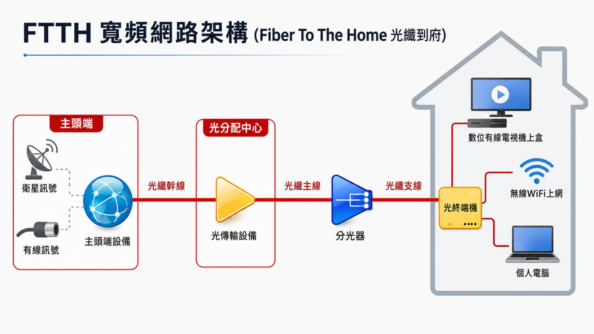

先查地址
提供完整地址、社區名稱與樓層，先確認該地址是否可申辦光纖到府與第四台組合。
前往地址查詢大豐有線電視旗下大大寬頻，提供 FTTH 光纖到府、網路＋第四台組合與 Wi‑Fi 6 分享器租借。輸入地址前，先看懂方案、安裝流程與報修方式，申辦更放心。
將優惠方案與 FTTH 光纖到府架構用圖片呈現，讓客人快速理解可辦方案、設備連接與家中使用情境。
適合放在首頁或方案區，讓客人第一眼看到主打速度、優惠與可選方案。
從主頭端、光分配中心、分光器到家中的光終端機，讓客人看懂光纖不是只有到社區，而是接到住家端設備。

透過左右對照，快速看懂一般網路與 FTTH 光纖到府在穩定度、傳輸方式、Wi‑Fi 覆蓋與第四台整合上的差異。
尖峰時段多人同時上網、追劇、遊戲時，FTTH 光纖到府可讓家中設備透過 ONT 與分享器穩定連線。
FTTH 光纖訊號進入住家後接到 ONT，再分配給分享器與設備，傳輸路徑更清楚。
線路速度與 Wi‑Fi 覆蓋要分開看；分享器位置不佳時，房間訊號仍可能變弱。
網路、Wi‑Fi 分享器與第四台機上盒可一起評估，一次確認方案與設備安排。
網站內容依照客人的決策順序重新排列：先確認能不能裝，再看方案與費用，最後才看接線、Wi‑Fi 與報修。
提供完整地址、社區名稱與樓層，先確認該地址是否可申辦光纖到府與第四台組合。
前往地址查詢依照家庭人數、追劇、遊戲、直播、店面或監視器需求，推薦合適速率，不用自己猜。
查看熱門方案安裝前先確認月租、設備租借、第四台需求與施工時間，降低現場溝通落差。
查看安裝流程網站保留接線、燈號與報修檢查區，日後遇到斷線或紅燈也知道先看哪裡。
查看報修檢查大大寬頻／大豐有線電視深耕在地多年，全台第一家上市上櫃有線電視業者。若您的地址不在清單上，仍歡迎來電，我們會實際評估管線可行性。
高雄地區服務：苓雅區、前鎮區、左營區、三民區（有線電視＋光纖網路）；楠梓區、鼓山區、小港區、新興區、前金區、鹽埕區（光纖到府網路服務）
用人數與用途來選，比只看速度更準。實際可安裝方案仍以地址查詢與業務報價為準。
適合 1–2 人，一般上網、追劇、滑手機。
適合 3–4 人、多台手機、電視、筆電同時使用。
適合高需求用戶、直播、監視器、NAS、公司店面。
勾選你的使用情境，右側會即時推薦方案。這不是正式報價，但能幫你先判斷 120M、500M 或 1.2G 哪個比較適合。
一般家庭最容易落在 500M，兼顧多人上網、4K 追劇與視訊會議。若只有 1–2 人輕度使用，可往 120M；若有直播、遊戲、公司店面需求，再看 1.2G。
實際月費依當期優惠與方案內容為準，正確報價請電洽業務或使用線上預約，我們會依您的用量給最合適的建議。
常見組合方案整理成一張表，方便先抓預算；實際可辦內容仍需依地址、當期活動與業務確認。
| 方案 | 內容 | 月費參考 |
|---|---|---|
| 熱門組合 | 888M／500M 光纖寬頻＋大豐第四台 | NT$999 起 |
| 高速組合 | 1.2G／500M 光纖寬頻＋大豐第四台 | NT$1099 起 |
| 單辦網路 | 120M、360M、500M、888M、1.2G 依地址可裝方案評估 | 電洽確認 |
| Wi‑Fi 6 分享器 | 依活動可租借使用，押金與設備條件以申辦時說明為準 | 押金約 NT$500 |
另有 360M／888M／66M 方案可洽詢，也可加購大豐有線電視數位頻道，網路+第四台組合價每月700元起（依速率不同）。
實際月費、裝機費(季繳制、約期一年)與優惠請以業務人員報價為準。
點此線上預約安裝，或直接撥打 0988-232-247 陳先生
將光纖到府、第四台與 Wi‑Fi 6 分享器重點整理成手機好讀的卡片，快速了解方案差異。
光纖訊號拉到住家內，降低傳統線路干擾，尖峰時段更適合多人同時使用。
適合 4K 追劇、線上遊戲、直播、雲端備份與多裝置家庭。
大豐第四台與光纖網路可一起評估，家裡追劇、新聞、電視盒一次處理。
申辦時可詢問分享器租借與押金條件，先確認是否需要另購設備。
多數人不是不想辦，而是卡在「我家能不能裝、會不會加價、Wi‑Fi 會不會不穩、裝機要準備什麼」。這一區專門解決申辦前的猶豫。
地址是否可裝、家裡格局適合怎麼放設備、費用是否清楚、舊網路要不要先退。這些先確認好，安裝時比較不會遇到「到了現場才發現不能裝」或「裝完 Wi‑Fi 還是不滿意」的問題。
實際仍以完整地址查詢為準，也可先依住宅情況初步判斷。
| 情況 | 可裝機率 |
|---|---|
| 同社區有人裝過大豐／大大寬頻 | 高 |
| 大樓有第四台線路或弱電箱 | 高 |
| 新大樓、社區型住宅 | 中高 |
| 透天、巷弄內、老公寓 | 需查線 |
| 裝潢封板、弱電箱很小 | 需確認 |
建議申辦前先確認月租、裝機、設備與特殊施工。若現場條件需要額外施工，會先說明再施工，讓費用更清楚。
| 項目 | 說明 |
|---|---|
| 月租費 | 依選擇速率與方案 |
| 裝機費 | 依活動或現場條件 |
| 設備費 | 確認是否含 Wi‑Fi 分享器 |
| 組合方案 | 網路＋第四台另行確認 |
| 特殊施工 | 需現場確認並事先告知 |
準備越清楚，工程師到府越順利。
指的是光纖線路進到家裡後，ONT／數據機可提供的連線能力。電腦用網路線直接測速，通常較能反映線路本身狀況。
會受到分享器位置、牆壁、樓層、弱電箱、舊設備規格影響。網路正常，不代表每個房間 Wi‑Fi 都一定滿格。
| 常見狀況 | 建議解法 |
|---|---|
| 分享器放弱電箱，房間訊號差 | 分享器盡量放客廳開放位置，或加 Mesh |
| 透天、多樓層、牆很厚 | 建議 Mesh 或有線回程規劃 |
| 電視盒、桌機、監視器不穩 | 能接有線就接有線，比 Wi‑Fi 穩 |
| 舊分享器速度跑不上去 | 檢查 WAN/LAN 是否支援 Gigabit、Wi‑Fi 規格是否太舊 |
可以。建議直接提供完整地址，先查詢服務範圍、管線與社區狀況，再決定是否安排到府安裝。
一般會依現場線路與屋內配置判斷，不一定需要鑽牆。若有特殊施工需求，會先確認位置與施工方式。
可以。可單辦網路，也可依需求搭配第四台或組合方案，實際優惠以申辦時業務說明為準。
可以。常見接法是 ONT 的 LAN 接到自己分享器的 WAN／Internet，再由分享器分配 Wi‑Fi 與有線網路。
建議放在客廳或家中中央、開放的位置。弱電箱、櫃子內、地上角落通常會影響 Wi‑Fi 覆蓋。
確認地址與方案後，會依工程排程安排到府；實際時間需看服務區、管線狀況與住戶可配合時段。
不一定。很多人會等新網路裝好並測試穩定後，再處理舊網路退租，避免中間沒網路可用。
通常可以，但建議先確認房東或管理室是否同意施工與牽線，尤其是需要進弱電箱、管道間或公共空間時。
可以。店面若有 POS、外送平台、監視器、刷卡機等需求，建議申辦前先說明設備數量與使用情境。
工程師通常會確認線路與設備能正常使用。若要確認最準速度，建議用電腦接有線測試，Wi‑Fi 測速會受環境影響。
多數地區最快當周即可完成安裝，實際時間依管線施工狀況而定。
撥打 0988-232-247 陳先生，或線上預約安裝，5 分鐘完成申請。
最快隔天安排工程師到場確認管線與最佳走線位置，現場報價無隱藏費用。
牽線、配發設備、現場實測速度，確認無誤再簽收；若要接自己的分享器，也可現場確認接法。
當天開通，之後若有訊號問題請撥報修專線 02-8253-8999。
裝機當天需要有人開門、確認路線、簽收設備與測速結果。
建議放在客廳或家中中央，減少牆面阻隔，Wi‑Fi 覆蓋會比較好。
桌機、電視盒、監視器、NAS 若要走有線，可先告知工程師。
若設備要放弱電箱，請先保留插座、散熱與線材空間。
建議新線路確認可正常使用後，再安排舊網路退租或停用。
人數、遊戲、直播、監視器、店面 POS 都會影響建議方案。
光纖數據機、分享器與電腦的接線順序很重要。照著「光纖盒 → ONT → 分享器 WAN → 分享器 LAN → 電腦」接線，就比較不容易插錯。
請依照下方順序接線：壁面光纖盒 → ONT 光纖數據機 → 分享器 WAN → 分享器 LAN → 電腦；手機與筆電則連分享器的 Wi‑Fi。
每台設備外觀不一定完全相同，但孔位邏輯大致一致：光纖進 ONT、ONT 的 LAN 接分享器 WAN、分享器 LAN 再分給電腦。
重點看 PON、LOS、LAN。PON 正常且 LOS 沒亮，通常代表光纖訊號正常；LAN 燈不亮則要檢查網路線與孔位。
光纖線接 PON / OPTICAL；一般網路線從 LAN1 接出。若不確定哪個 LAN 孔有開通，依工程師現場指定為準。
WAN / Internet 接 ONT；LAN1-4 接電腦、電視盒、監視器。手機、平板與筆電通常直接連分享器 Wi‑Fi。
用設備圖解讓客人先理解弱電箱、ONT、分享器、電腦與店面設備的連接方式，申辦前更安心。
先了解光纖、數據機與家中網路線會集中在哪裡，申辦前比較安心。
提醒光纖數據機需要電源、通風與穩定擺放位置，不建議被雜物壓住或悶在角落。
用圖解說明分享器放客廳、玄關或弱電箱，會影響不同房間的 Wi‑Fi 訊號。
桌機、遊戲主機、直播設備建議接分享器 LAN 孔，比 Wi‑Fi 更穩定。
POS、刷卡機、外送平台、監視器可先告知，方便評估分享器與有線位置。
安裝後確認可正常連線，再協助說明基本使用方式與設備燈號。
POS、外送平台平板、刷卡機、監視器都需要穩定連線，建議現場確認分享器位置。
多人視訊、雲端檔案、NAS、印表機共用，建議評估 500M 以上或高階方案。
若需要遠端觀看、固定 IP、Port Forwarding、橋接模式，可安裝時先提出需求。
120M、500M、888M、1.2G 等方案依地址與活動檔期確認。
家中長輩看第四台、客廳電視需求、機上盒與網路可一起評估。
很多斷線問題其實是分享器、網路線或孔位接錯。先照這個順序檢查，客服或工程師也能更快判斷問題點。
如果出現 LOS 紅燈、光纖線疑似鬆脫或折到，請不要自行拆光纖頭，直接撥打報修專線 02-8253-8999。
PON 正常、LOS 沒亮，通常代表光纖訊號有進來；LOS 紅燈亮或閃，較可能是光纖訊號異常。
先拔分享器電源，再拔 ONT 電源，等待 30 秒後先插回 ONT，等燈號穩定後再插分享器。
ONT 的 LAN1 要接到分享器的 WAN / Internet 孔，不是接到分享器 LAN1-4。
電腦主機要插在分享器 LAN1-4 任一孔，不要插到 WAN 孔。
網路線老化、卡榫斷掉或沒有插到底，都會造成 LAN 燈不亮或速度異常。
把分享器先拔掉，用網路線從 ONT LAN1 直接接電腦。若這樣正常，多半是分享器設定或分享器本體問題。
新申辦或方案諮詢，請撥業務專線 0988-232-247 陳先生；如果您已經是用戶，網路斷線或訊號異常，請直接撥打故障報修專線 02-8253-8999，不要打錯避免多等待。
大大寬頻的 FTTH 是真正「最後一哩」都以光纖傳輸訊號到府，不是只有到大樓或到路邊機箱、最後一段還是用傳統銅線的「半套」光纖。真光纖到府不受停電影響連線、不易受電磁干擾、訊號品質更穩定。申辦前可直接詢問業務是否為完整光纖到戶，避免花錢卻裝到「半套」。
可以。速率選擇很多（1.2G／888M／500M／360M／120M／66M），單辦網路不會強制綁定第四台。若之後想加裝大豐有線電視數位頻道，也能再另外加購組合方案。
確認安裝需求與地址可行後，會協助安排工程師到府施工，平日、假日或晚上時段可再依排程確認。
可以先自行嘗試：重新啟動數據機與路由器(拔插電源約30秒後再接上)、確認網路線有確實接妥。若重啟後仍無法連線，請撥打報修專線 02-8253-8999 或免付費 0800-360-999，也可以線上申告，由客服協助線上排除或安排工程師到府檢修。
可以。建議接法是：光纖線先進光纖數據機／ONT，再用網路線從 ONT 的 LAN 孔接到自己分享器的 WAN／Internet 孔，最後從分享器 LAN 孔接到電腦主機。若有遊戲、監視器、NAS 或遠端連線需求，安裝時可請工程師協助確認橋接或路由設定。
月租費用與安裝相關費用會在簽約前由業務當面說明並確認，正式報價以合約書為準。若對帳單金額有疑問，可直接撥打客服電話查詢帳務明細。
可以先確認 ONT 的 PON、LOS、LAN 燈號，重開 ONT 與分享器，確認 ONT LAN 有接到分享器 WAN，電腦有接到分享器 LAN。若仍無法上網，可用 ONT LAN1 直接接電腦測試。
LOS 紅燈亮或閃通常代表光纖訊號異常、光纖線鬆脫或線路中斷。請不要自行拆光纖頭，建議直接撥打故障報修專線 02-8253-8999。
可以。可單辦網路，不一定要綁第四台；也可以依需求搭配大豐有線電視數位頻道，實際方案與優惠以業務報價為準。
大大寬頻是大豐有線電視相關服務品牌，主要提供光纖到府網路、寬頻與有線電視相關方案。新申辦與報修建議依頁面電話分流，避免打錯專線。
板橋、中和、永和、土城為主要服務範圍之一，但實際仍需用完整地址確認管線與可施工狀況。建議先來電或 LINE 傳地址查詢。
確認地址與方案後，多數地區可安排近期到府會勘與安裝；實際時間仍會依管線、工程排程、住戶可配合時段而定。
已裝機用戶如果是網路斷線、訊號異常或設備燈號問題，請撥故障報修專線 02-8253-8999，也可撥免付費 0800-360-999。
WAN／Internet 是分享器「接收外部網路」的孔，應該接 ONT 光纖數據機的 LAN；LAN 1–4 是分享器「分給家中設備」的孔，電腦、電視盒、監視器通常接 LAN。
是，主打 FTTH 光纖到府服務；不過實際線路形式與可安裝方案仍需依完整地址查詢與現場管線確認。建議先傳地址給業務確認。
通常代表下載最高 1.2G、上傳最高 500M 的速率規格。下載影響追劇、遊戲更新、大檔案下載；上傳則影響直播、雲端備份、監視器遠端觀看與傳檔。
適合多人同時上網、4K 影音、遊戲、視訊會議、手機與電視盒很多的家庭。若有直播、NAS、大量上傳或店面監視器需求，可再評估 1.2G／500M。
可以，可詢問大豐第四台＋大大寬頻的組合方案，例如 888M／500M 或 1.2G／500M 搭配第四台。實際價格與活動以申辦當下報價為準。
不一定。申辦時可詢問是否有 Wi‑Fi 6 分享器租借或活動方案，部分方案可能需押金或依現場需求加裝。大坪數、透天或隔間多的房子，也可評估 Mesh。
安卓機上盒可用來觀看影音與電視相關內容，實際功能、可用 App、遙控器操作與是否內建，需依當期第四台方案與設備規格確認。
光纖到府是把光纖訊號拉到住家端，較適合多人同時使用、4K 影音、遊戲、直播、監視器與店面設備。一般網路可能受區域共享、線路品質或最後一段傳輸方式影響。
最快方式是提供完整地址，讓業務查管線與服務範圍。大樓、社區、透天、老公寓、巷弄內都可能需要不同判斷，實際以地址查詢與必要時現場會勘為準。
以下以常見使用情境整理，方便依住家、店面、辦公室與社區需求選擇合適網路。
適合多人家庭，同時看 4K、滑手機、打線上遊戲，建議從 500M 評估。
店面網路最怕斷線影響收單，可依設備數量評估 500M 或 1.2G。
公司戶常有上傳下載、雲端備份、視訊會議，建議不要只看最低價。
新社區、社區大樓、透天厝狀況不同，提供完整地址後可先確認可否安裝。
實際營業時間與可辦業務請以官方公告為準；新申辦可先直接電話或 LINE 詢問。
大豐有線電視在地服務據點多年經驗，故障報修有真人回應，不必重複轉接說明。
新申辦撥 0988-232-247 陳先生，已裝機用戶故障撥 02-8253-8999，不用猜該找誰。
光纖訊號拉到住家端，適合多人追劇、遊戲、視訊與店面設備使用；實際速度仍依地址、設備與現場環境為準。
完成地址與管線確認後，會協助安排工程師到府施工，實際時間依地區與排程為準。
可依方案與活動租借 Wi‑Fi 分享器，安裝時協助確認基本連線與擺放建議。
不想裝第四台也沒關係，網路可單獨申辦，可依需求選擇網路或電視組合。
大大寬頻與大豐有線電視服務區域包含新北板橋、中和、永和、土城、樹林、三峽、鶯歌等地，實際能否安裝需依完整地址與現場管線確認。
板橋區住宅、社區與小型辦公室可洽詢大大寬頻光纖到府服務，適合追劇、遊戲、遠距上班與多裝置家庭使用。
中和區用戶若遇到晚上尖峰不穩、多人同時上網卡頓，可評估光纖到府方案，並依地址確認管線可行性。
永和區住宅密集，多人家庭與租屋族常需要穩定 Wi‑Fi 與有線網路配置，申辦前可先詢問合適速率與安裝方式。
土城區住家、店面與工作室可依使用需求選擇 120M、500M 或 1.2G 等方案，安裝前可安排會勘確認走線。
樹林區部分里別可洽詢光纖到府服務，若地址位於服務範圍邊界，建議先提供完整地址確認可否施工。
三峽市區與北大生活圈周邊用戶，可依家庭人數、遊戲需求、外送店面或辦公需求選擇合適光纖方案。
鶯歌市區周邊可洽詢大大寬頻與大豐有線電視服務，實際安裝仍需依管線與地址判定。
高雄部分行政區也有有線電視與光纖網路服務，可依實際地址確認是否能安裝與可申辦方案。
實際能否安裝仍以完整地址、管線狀況與業務人員確認為準。